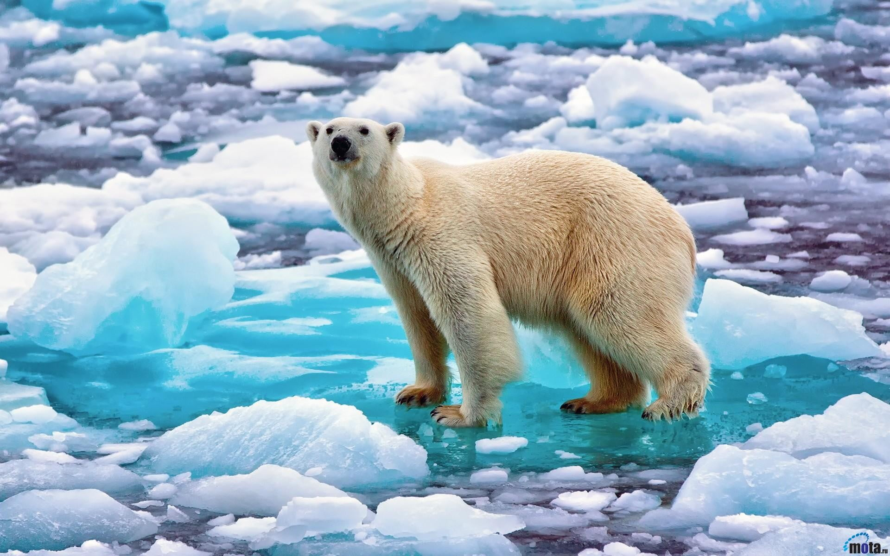

.jpg)

L'ours blanc (Ursus maritimus), aussi connu sous le nom d'ours polaire, est un grand mammifère omnivore (à prédominance carnivore) originaire de l'Arctique. C'est, avec l'ours kodiak et l'éléphant de mer, l'un des plus grands carnivores terrestres et il figure au sommet de sa pyramide alimentaire. Parfaitement adapté à son habitat, l'ours blanc possède une épaisse couche de graisse ainsi qu'une fourrure qui l'isolent du froid. La couleur blanche de son pelage lui assure un camouflage idéal sur la banquise et sa peau noire lui permet de mieux conserver sa chaleur corporelle. Pourvu d'une courte queue et de petites oreilles1, il possède une tête relativement petite et fuselée ainsi qu'un corps allongé, caractéristiques de son adaptation à la natation. L'ours blanc est parfois considéré comme un mammifère marin semi-aquatique2, dont la survie dépend essentiellement de la banquise et de la productivité marine. Il chasse aussi bien sur terre que dans l'eau. Son espérance de vie est de 15 à 30 ans. Cette espèce vit uniquement sur la banquise autour du pôle Nord, au bord de l'océan Arctique. L'Union internationale pour la conservation de la nature (UICN) estime la population d'ours blancs à environ 26 000 individus3. Elle considère l'espèce comme vulnérable (VU), principalement en raison du réchauffement climatique et du bouleversement de son habitat qui en résulte. En 2015, Morten Jørgensen conclut au contraire que la principale menace pesant sur l'ours polaire est la chasse, loin devant le changement climatique, et estime la population inférieure à 20 000 individus4. Animal charismatique, l'ours blanc a un fort impact culturel sur les peuples Inuits, qui dépendent toujours de sa chasse pour survivre. Il a également marqué la culture populaire via certains de ses représentants comme Knut, ou encore l'art avec la sculpture d'ours blanc réalisée par François Pompon. Le parc national Wapusk au Manitoba, au Canada, est connu pour être la capitale mondiale des ours polaires. C’est l’un des meilleurs endroits pour voir ces ours dans leur environnement, particulièrement à leur arrivée en automne, alors qu’ils attendent que la baie d'Hudson gèle, afin de pouvoir y chasser le phoque5.